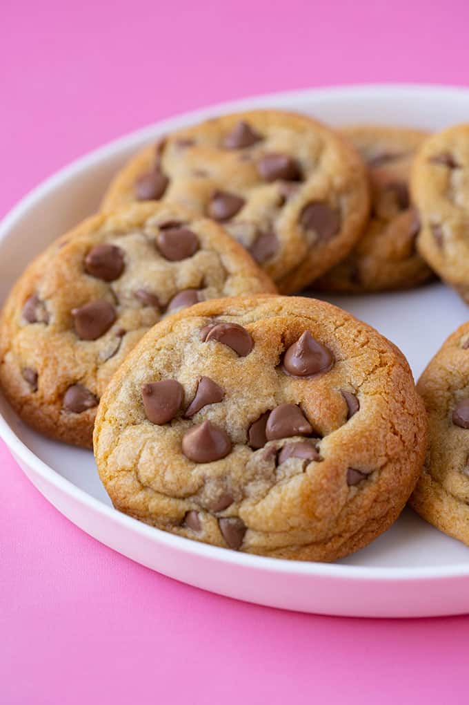

Chocolate Chip Cookies

Ingredients
-
1 cup butter, softened
- 1 cup white sugar
- 1 cup packed brown sugar
-
2 large eggs
- 2 teaspoons vanilla extract
- 1 teaspoon baking soda
- 1 teaspoon pure vanilla extract
- ½ teaspoon salt
- 3 cups all-purpose flour
- 2 cups semisweet chocolate chips
- 1 cup chopped walnuts
Instructions
- Gather your ingredients, making sure your butter is softened, and your eggs are room temperature.
- Preheat the oven to 350 degrees F (175 degrees C). Beat butter, white sugar, and brown sugar with an electric mixer in a large bowl until smooth.
butter, white sugar, and brown sugar mixed together in a mixing bowl
- Beat in eggs, one at a time, then stir in vanilla.
eggs mixed into cookie batter, one at a time
- Dissolve baking soda in hot water. Add to batter along with salt.
baking soda and water being mixed into cookie batter
- Stir in flour, chocolate chips, and walnuts.
flour, chocolate chips, and nuts mixed into cookie batter
- Bake in the preheated oven until edges are nicely browned, about 10 minutes.
cookies baked until edges are perfectly golden brown